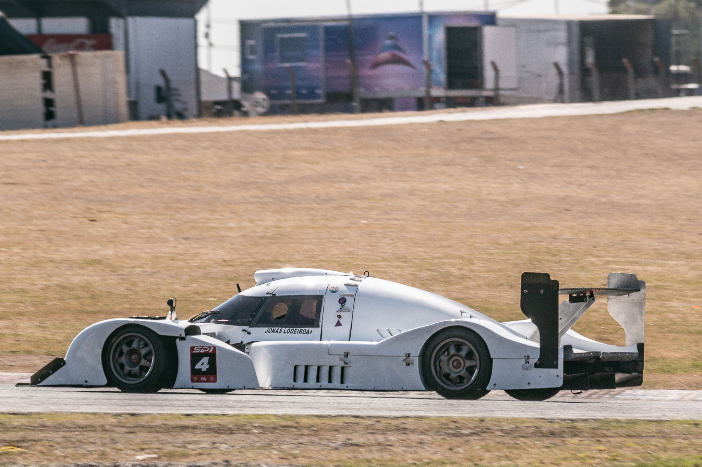

¿Qué fue?
Fue una competencia automovilística disputada desde 1999 hasta 2013 en Estados Unidos y Canadá. Aquí
participaban varios tipos de sport prototiposLos sport prototipos son autos de carreras diseñados específicamente para la
competición. Son conocidos por su velocidad y agilidad en la pista.  y granturismosLos granturismos son
automóviles de alto rendimiento diseñados para combinar comodidad y rendimiento en largas
distancias. , los campeones de estas ganaban una invitación a las 24 de Le Mans del
próximo año.
, los campeones de estas ganaban una invitación a las 24 de Le Mans del
próximo año.
Eventos Notables de AMLS
-
12 Horas de Sebring
La carrera de resistencia más famosa en América del Norte, celebrada en Sebring, Florida. La ALMS a menudo comenzaba su temporada aquí.
-
6 Horas de Watkins Glen
Una carrera de resistencia celebrada en el circuito Watkins Glen International en Nueva York. Ofrecía desafíos únicos a los pilotos y equipos.
-
Petit Le Mans
Una carrera de 10 horas celebrada en Road Atlanta, que solía ser la final de la temporada ALMS. Conocida por su emocionante acción y desafíos para los equipos.